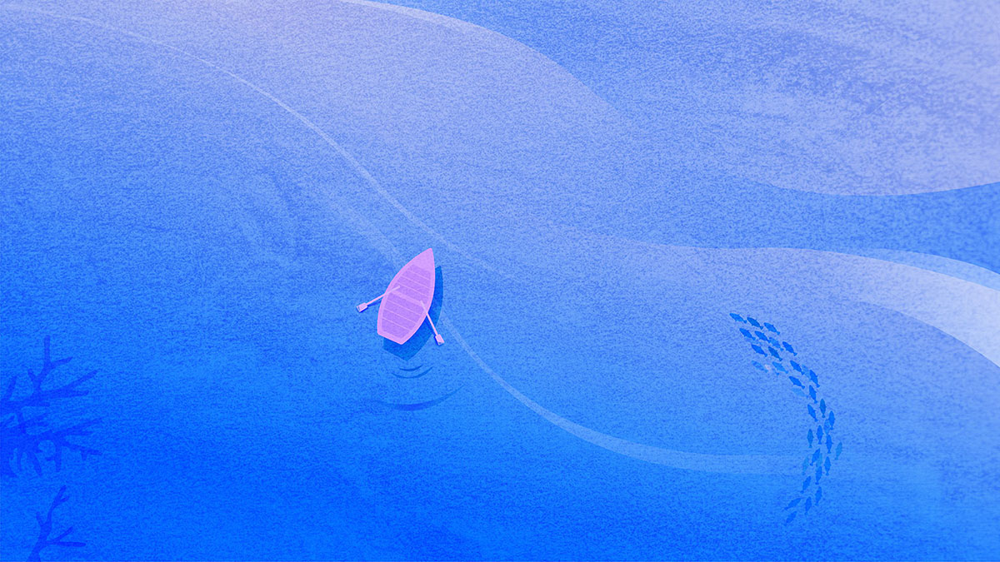
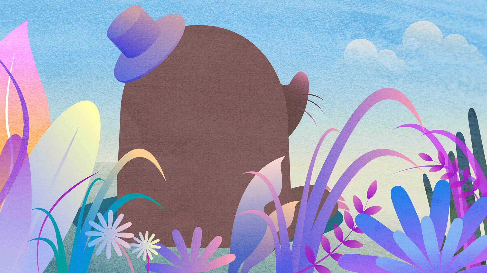
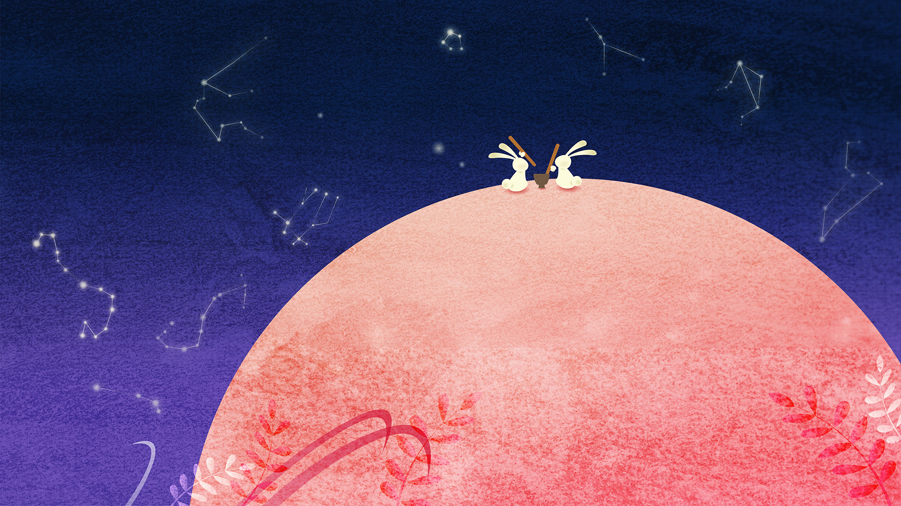
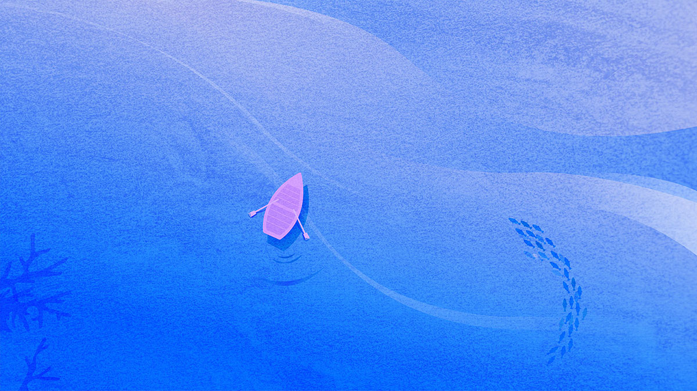
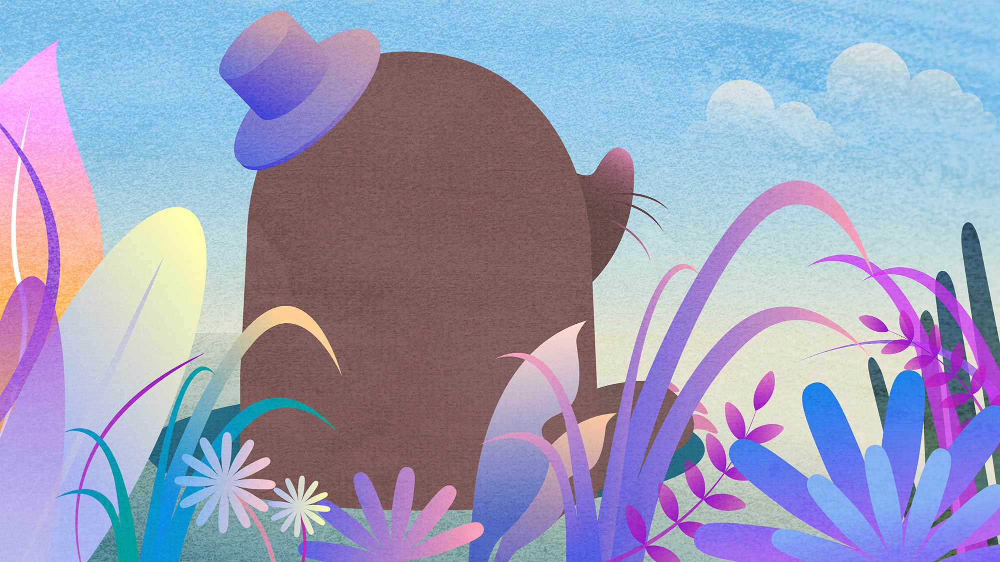
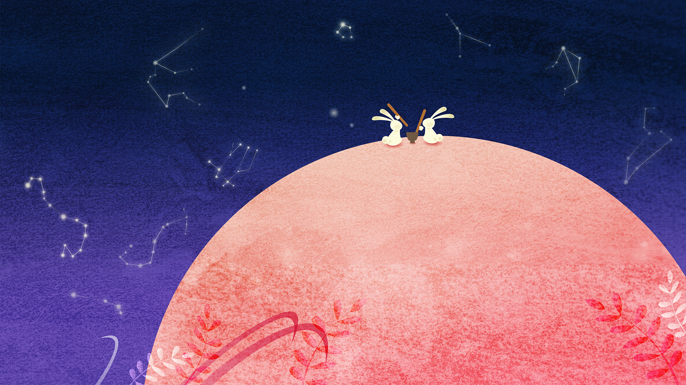

2D graphic / Mobile game design / Game UI design / Motion graphic design
From the Sun is a mobile healing game designed for modern individuals surrounded by electronic devices. It takes inspiration from the daily routine of accessing webcomics, social media, and Youtube without a specific purpose. Compare to traditional healing games that demand continuous tapping, the game follows a format where the story progresses simply by simply by connecting to content, similar to how you would access these platforms.
Inspired by Choi Nam-sun’s poem ‘From the Sun’, the game begins with a scene of a lonely sun initiating a conversation with the boy. This game doesn’t require any special interactions; instead, the story unfolds as users connect and build familiarity through dialogues with the sun. It progresses by bringing other friends from nature, such as the moon or animals, through this interaction.
<해에서 소년에게>는 전자기기와 자극에 둘러싸여 살아가는 현대인들을 위한 힐링게임입니다.이 게임은 목적이 없이도 하루에 한 번씩 웹툰, sns, 유튜브에 접속하는 우리의 생활 양식을 모티브로 합니다. 지속적인 탭을 요구했던 기존의 힐링게임들과는 다르게, 웹툰이나 유튜브로 컨텐츠를 보듯이 접속하는 것만으로도 스토리가 진행되는 형식을 띕니다.
최남선의 시 <해에서 소년에게>를 모티브로하는 이 프로젝트는 외로운 해가 소년에게 말을 걸면서 시작합니다. 특별한 인터렉션 없이 접속을 하는 것만으로도 스토리 진행이 되며, 해와의 대화를 통해 친밀도를 쌓고, 자연에서 달이나 동물과 같은 다른 친구들을 데려와 외로움을 극복해나가는 방식으로 진행됩니다.
Footnotes
1
Rock, M. and 2X4 (Design Studio (2013). Multiple signatures : on designers, authors, readers and users. New York: Rizzolis
2
Augé, M. (1995). Non-places: an Introduction to Supermodernity. London: Verso.
3
Colomina, B. (2001). Enclosed by Images: The Eameses' Multimedia Architecture. Contributors. Grey Room, 2, pp.5–29. doi:https://doi.org/10.1162/ grey.2001.1.02.4.
4
Sang, L. (1934) O-gam-do Poetry Vol.1-15, Chosun, Chosun JoongAng Ilbo
5
Experimental Jetset (2021). Superstructures. Amsterdam Stichting Roma Publications.
6
Ordinary People (2021). QXN — Quadrilateral. [online] Ordinary People. Available at: https://ordinarypeople.info/work/qxn [Accessed 25 Feb. 2023].
7
Georges Perec and Sturrock, J. (2008). Species of space and other pieces. London: Penguin
8
Seu, M. (2023). Mindy Seu. [online] mindyseu.com. Available at: https://mindyseu. com/ [Accessed 19 May. 2023].

 




